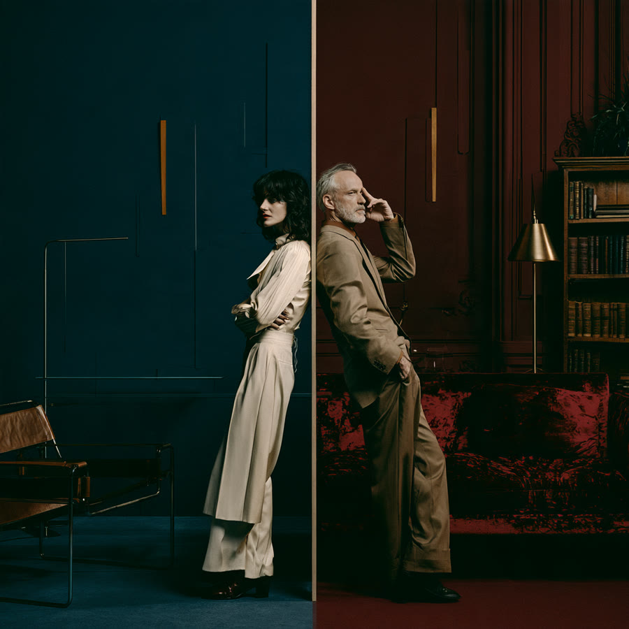

Articolo · Civile · Famiglia · 2 minuti
Ci separiamo d'accordo: serve per forza il tribunale?
Se siete d'accordo su casa, figli e soldi, in tribunale potete non entrare mai.
Si chiama negoziazione assistita. Ognuno dei due ha il suo avvocato, ci si siede allo stesso tavolo e si scrive l'accordo: chi resta nella casa, con chi stanno i figli e in quali giorni, quanto versa uno all'altro.
L'accordo firmato va in procura entro dieci giorni. Se ci sono figli, lo legge un pubblico ministero e lo approva. Poi arriva al Comune, e da quel giorno siete separati. Dopo sei mesi si può chiedere il divorzio, per la stessa strada.
Se l'accordo non si trova, resta il tribunale. Ma conviene provarci prima: quello che vi scrivete voi lo conoscete meglio di qualunque giudice.
Angela Angelicata